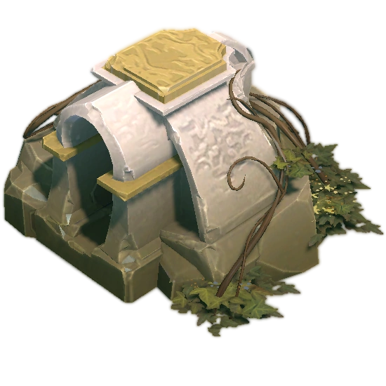
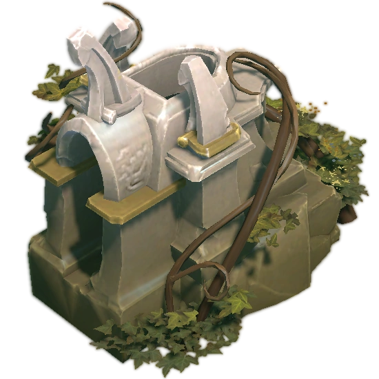

| Казармы предназначены для выпуска крипов каждые 30 секунд. Казармы бывают двух видов, казарма крипов ближнего боя и казарма крипов дальнего боя. Сломав казарму врага на определённой линии, крипы продолжат появляться, однако ваши крипы станут сильнее на данной линии. Сломав казармы на всех линиях, вы получаете мегакрипов. Казармы неуязвимы, пока вы не сломаете башню третьего уровня.   |